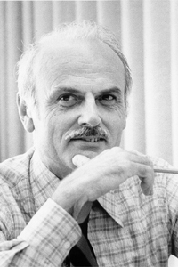

|  |
1981 год Edgar F. Codd (1923–2003) «За его фундаментальный и продолжительный вклад в теорию и практику систем управления базами данных» |
Страна: Великобритания, США
Образование: Доктор философии в области теории связи, Университет штата Мичиган, 1965
О лауреате
Edgar Codd начал свою карьеру в 1949 году, присоединившись к IBM в Нью-Йорке в качестве математика-программиста, разрабатывающего программы для Selective Sequence Electronic Calculator. В 1965 году он получил докторскую степень. Его диссертация была о самовоспроизведении в клеточных автоматах, распространяющейся на работу фон Неймана и показывающей, что для универсальных вычислений и построения достаточно набора из 8 состояний, вместо 29. В 1968 он разработал данный клеточный автомат, в котором можно было создать самовоспроизводящуюся машину, аналогичную универсальному конструктору фон Неймана. В этом же году он обратил внимание на проблему баз данных. В то время существовало несколько баз данных, однако они были громоздкими и трудными в использовании. Codd разработал свою теорию хранения данных – реляционную модель данных. Он описал свою модель и исследовал ее последствия в ряде исследовательских работ, которые он опубликовал в течение следующих нескольких лет. В начале 80-х реляционная модель начала входить в моду. Борясь с недобросовестными поставщиками СУБД, которые утверждали, что их устаревшие продукты поддерживают реляционную технологию, Кодд опубликовал «Codd's 12 rules», описывающие, что должна содержать реляционная СУБД.
Ключевые слова: Relational model, Codd's cellular automaton, Codd's 12 rules
Краткая библиография
| 1. |
Codd, E. F., “A Relational Model of Data for Large Shared Data Banks,” Communications of the ACM, Vol. 13, No. 6 (June 1970); reprinted in Milestones of Research—Selected Papers 1958-1982 (CACM 25th Anniversary Issue), Communications of the ACM, Vol. 26, No. 1 (January 1983). Первая статья о реляционной модели баз данных. |
| 2. |
Codd, E. F., “A Data Base Sublanguage Founded on the Relational Calculus,” Proceedings of the 1971 ACM SIGFIDET Workshop on Data Description, Access and Control, San Diego, California, (November 11th-12th, 1971). В этой статье приводится конкретный пример того, как концепции из предикатной логики могут использоваться в качестве основы для разработки языка базы данных высокого уровня |
| 3. |
Codd E. F., “Further Normalization of the Data Base Relational Model,” in Randall J. Rustin (ed.), Data Base Systems: Courant Computer Science Symposia Series 6, Prentice-Hall, Englewood Cliffs, N.J., 1972. Это документ, в котором были представлены основные идеи реляционной нормализации, тем самым заложив основу для исследований в области проектирования баз данных. С тех пор теория проектирования баз данных стала самостоятельной сферой исследования. |